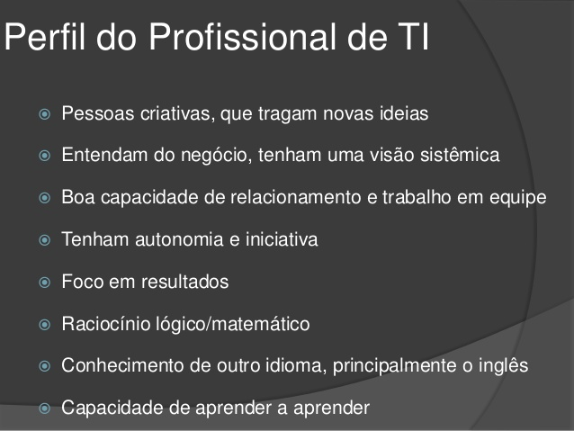

O que faz um profissional de TI?
O gestor de TI, auxilia a empresa a não fazer investimentos desnecessários o tecnólogo pode trabalhar com a administração de equipes e recursos técnicos, enquanto um especialista em suporte ajuda usuários com problemas diversos.
E é graças ao grande campo de atuação da tecnologia que um profissional do ramo pode se adaptar a diferentes setores. Assim, da indústria de tecidos à agricultura, analistas de rede, especialistas em bancos de dados e até desenvolvedores são facilmente alocados em alguma função. Especificamente no Brasil, essa área teve grande crescimento, com a expansão da internet e dos computadores tendo impulsionado o mercado, mais empresas brasileiras estão integrando a TI em suas estratégias comerciais.
Quer saber mais sobre esse profissional, venha nos visitar nosso endereço esta logo abaixo.